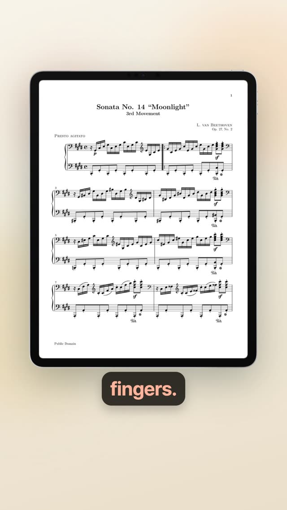
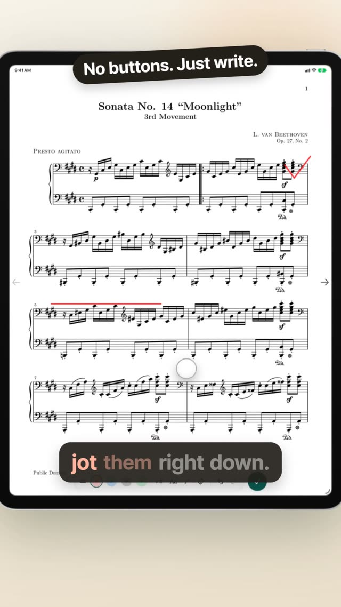

Write on your sheet music instantly: the three-finger tap
Mid-practice, you want to jot down a breath mark or a dynamic. If you have to stop and look for the pen button, the flow is gone. OurScore (listed as 우리악보 on the App Store), a sheet music reader for iPad and iPhone, cuts that down to one tap.
How it works
1. Tap once with three fingers
Tap anywhere on the score with three fingers. The pen, colors and music symbols appear at the bottom of the screen right away.

2. Write on the score
Mark the bar you need with Apple Pencil or your finger. You can switch colors or fix a stroke with the eraser.

3. Tap again to go back to playing
Another three-finger tap hides the tools and returns you to the score. Your marks stay where you left them.
Screens were recorded from the real app running in a simulator. The finger markers show where the screen was touched.